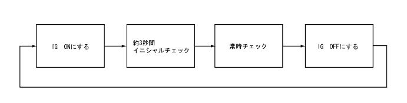

Pre-crash Safety System Diagnosis System |
Turn the ignition switch OFF, wait for 2 seconds or more, then turn the ignition switch ON; the pre-crash safety system is diagnosed for approximately 3 seconds.
If a malfunction is found during the initial check, "PCS System Check" is shown on the multi-information display in the combination meter assembly after the initial check is completed (3 seconds elapsed).
When the initial check is completed (3 seconds elapsed), the seat belt control computer enters system control mode and constantly monitors the system for malfunctions.
If a malfunction is detected during the constant check, "PCS System Check" or "PCS Currently Unavailable" is shown on the multi-information display in the combination meter assembly.
